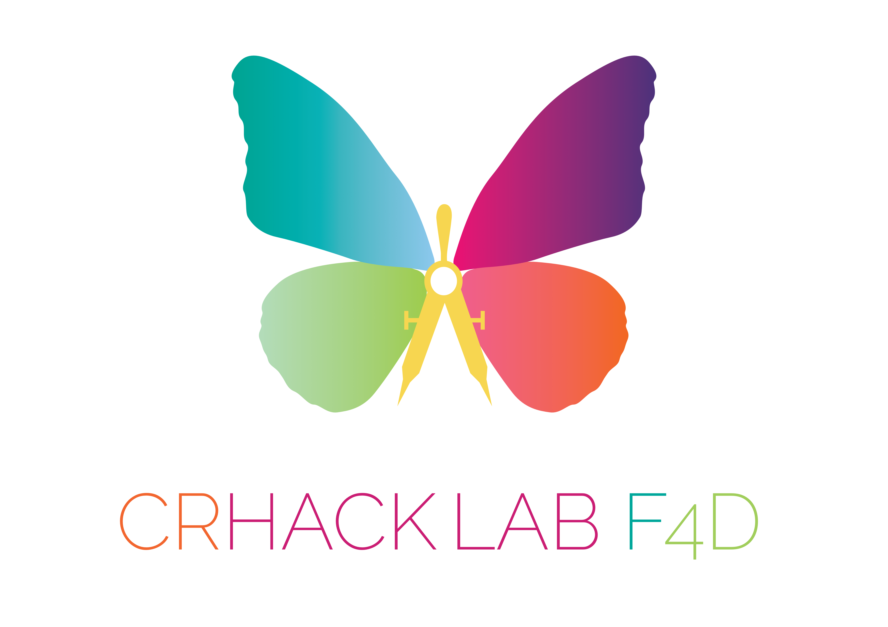

Obiettivi
Rendere i luoghi della cultura e le opere d'arte fruibili, inclusivi ed accessibili a un pubblico più vasto possibile.
Risultati
I risultati tangibili, co-costruiti dagli stessi soggetti beneficiari e che hanno reso i Musei accessibili, sono:
- La produzione di una guida del Museo Diocesano di Foligno in Easy to Read.
- La produzione di una guida Fotografica del Museo.
- Una rielaborazione virtuale degli spazi dei musei in Mozilla Hubs.
- I destinatari e protagonisti del progetto sono utenti con disabilità cognitive e disturbi dello spettro autistico.
Stato
Concluso:
- il primo progetto al Museo Capitolare Diocesano di Foligno
- Viaggio alla Scoperta dei Borghi lungo la Strada del Sagrantino
In lavorazione:
- il progetto al Polo CIAC Foligno e la Guida ArteMIA.
ArteMIA-L'Arte per l'Inclusione e l'Accessibilità - Guida alla Visita del Museo Capitolare Diocesano di Foligno
Il Progetto ArteMIA è stato un percorso di scoperta e accessibilità al patrimonio culturale incentrato sulle opere custodite all’interno del Museo Diocesano di Foligno attraverso laboratori di arteterapia fotografica. I risultati tangibili, co-costruiti dagli stessi soggetti beneficiari e che hanno reso il Museo accessibile, sono:
I destinatari e protagonisti del progetto sono utenti con disabilità cognitive e disturbi dello spettro autistico.
Partner:



Finanziato da:

ArteMIA-L'Arte per l'Inclusione e l'Accessibilità - Viaggio alla Scoperta dei Borghi lungo la Strada del Sagrantino
L’obiettivo del Progetto ArteMIA- Viaggio alla Scoperta dei Borghi lungo la Strada del Sagrantino è quello di creare un Itinerario Accessibile per e con persone con disabilità cognitive, alla scoperta delle terre e dei borghi che afferiscono al territorio del Sagrantino. I partecipanti verranno accompagnati alla conoscenza e alla scoperta dei più importanti e rappresentativi luoghi della cultura situati nei comuni di Montefalco, Bevagna, Giano dell’Umbria e Gualdo Cattaneo, contribuendo in prima persona alla promozione di una delle aree più belle e caratteristiche della Regione Umbria.
E' stata creata una guida che si può trovare al seguente link:
Partner:


Finanziato da:

L’intervento è stato realizzato con il sostegno dei "Fondi per Bando Sostegno per il sostegno di progetti nel settore del welfare culturale anno 2023” “PR FESR 2021-2027. Az. 1.3.4.– Sostegno alle imprese turistiche, di servizi per il turismo, cinematografiche, audiovisive, culturali e creative e sociali"
ArteMIA-L'Arte per l'Inclusione e l'Accessibilità - Guida ai Poli CIAC
L’obiettivo del Progetto ArteMIA-Guida ai Poli CIAC è quello di creare un Itinerario Accessibile per e con persone con disabilità cognitive, alla scoperta delle opere custodite all’interno del CIAC e della Calamita Cosmica, permanentemente esposta presso la Ex Chiesa della SS. Trinità in Annunziata. La proposta di realizzare una Guida/Itinerario dei poli CIAC, nasce dalla volontà di aprire gli spazi museali ad un pubblico più vasto possibile e dalla consapevolezza che, troppo spesso, l’Arte Contemporanea viene lasciata da parte poiché considerata troppo complessa o elitaria. La realizzazione della Guida accessibile permette non solo di far avvicinare ai musei un pubblico nuovo, ma anche di creare un prodotto potenzialmente fruibile da tutti per guidarli e informarli alla scoperta del CIAC.
Sono state create due guide che si possono trovare ai seguenti link:
Partner:

Finanziato da: